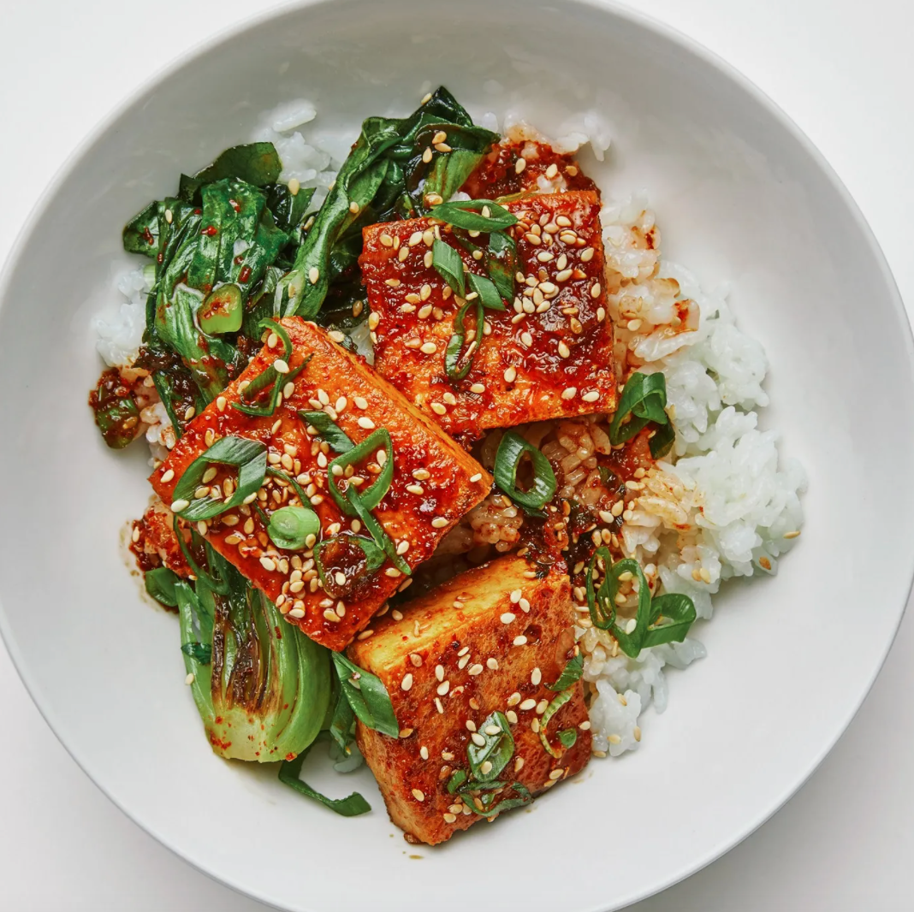
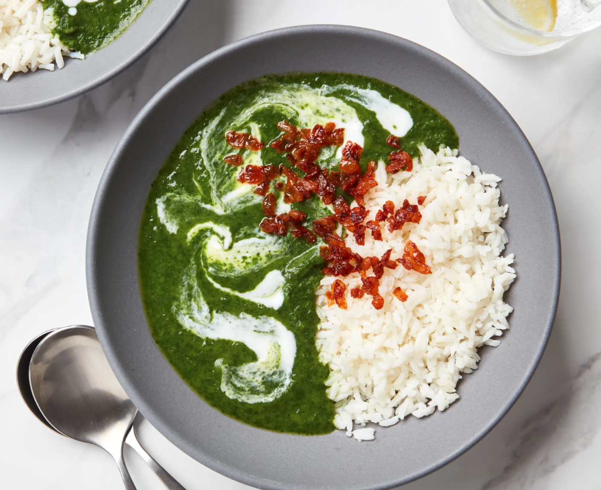

Spicy Braised Tofu
Ingredients
2 servings
1 (14-oz.) block firm or extra-firm tofu, drained
3 Tbsp. soy sauce
3 Tbsp. mirin (sweet Japanese rice wine)
1 tsp. toasted sesame oil
¾ tsp. gochugaru (coarse Korean red pepper powder) or other mild red pepper flakes
1 scallion
2 Tbsp. grapeseed or vegetable oil, divided, plus more for drizzling
Kosher salt
1 small garlic clove, finely chopped
1 tsp. finely chopped peeled ginger
Toasted sesame seeds and cooked rice (for serving)
Step 1
Wrap tofu in a clean kitchen towel and place on a rimmed baking sheet. Weigh down with a heavy object (a couple of heavy cans works well) and let sit 10 minutes.
Unwrap tofu and slice in half lengthwise, then cut crosswise into 6 sections to create 12 squares.
Step 2
Whisk soy sauce, mirin, sesame oil, gochugaru, and 3 Tbsp. water in a small bowl to combine; set sauce aside.
Step 3
Trim dark green top from scallion and thinly slice; set aside.
Thinly slice remaining white and pale green parts of scallion. Heat 1 Tbsp. grapeseed oil in a nonstick skillet over medium-high.
Carefully add tofu in a single layer and lightly season with salt.
Cook, undisturbed, until golden brown, about 5 minutes; turn over and cook until golden brown on other side, about 5 minutes.
Transfer tofu to a plate; reserve skillet (no need to wipe out).
Step 4
Heat remaining 1 Tbsp. grapeseed oil in reserved skillet over medium.
Cook scallion white and pale green parts, garlic, and ginger, stirring, until softened but not browned, about 1 minute.
Step 5
Return tofu to skillet. Pour in reserved sauce and bring to a simmer.
Reduce heat to medium-low and cook, turning tofu once or twice and occasionally spooning sauce over, until sauce is reduced by about half, about 4 minutes.
Step 6
Transfer tofu to a large plate, spoon sauce over, and sprinkle with sesame seeds and reserved scallion top. Serve with rice alongside.

Dahi Dal (Yogurt Lentil Curry With Spinach)
Ingredients
6 servings
100g (3½ oz.) spilt moong dal
400ml (14 fl oz.) boiling water
½ teaspoon salt
½ teaspoon ground turmeric
1-inch piece piece of fresh root ginger, peeled and roughly chopped
7 oz. fresh spinach leaves
2 tablespoons ghee
2 onions, finely chopped
1 teaspoon chile powder
3 tablespoons plain yogurt
Step 1
Put the moong dal in a pan with the measured boiling water, salt, turmeric and ginger.
Bring to the boil, then cover and cook over a low to medium heat for 10 minutes.
Add the spinach, cover again and cook for another 5 minutes until the lentils are soft and the spinach has wilted.
Step 2
Meanwhile, heat the ghee in a frying pan, add the onions and cook over a low to medium heat for 10 minutes until golden, then stir in the chile powder. Remove from the heat and set aside.
Step 3
Once the lentils are ready, blitz to a purée with a hand blender or in a blender or food processor.
Return to the pan, if necessary, and bring to the boil.
Then take off the heat, add the yogurt and mix well. Transfer the dal to a serving bowl, top with the fried onions and serve.
Simple One-Skillet Chicken Alfredo Pasta
Ingredients
6 servings
1 1/2 pounds skinless, boneless chicken breasts
Kosher or coarse salt and freshly ground black pepper, to taste
2 tablespoons unsalted butter
1 teaspoon minced garlic
4 cups chicken broth, preferably low-sodium
1 package (1 pound) penne rigate or ziti
1 1/2 cups heavy (whipping) cream or half-and-half, warmed
1 cup freshly grated Parmesan, plus more for serving
1/4 cup chopped fresh flat-leaf parsley (optional)
Step 1
Cut the chicken breasts into 1-inch pieces. Season with salt and pepper.
Step 2
Melt the butter in a very large skillet over medium-high heat. Add the chicken, in batches if necessary, and sauté until nicely browned on the outside, but still a bit pink inside, about 4 minutes (the pieces don't have to be browned on all sides; two sides is fine).
Remove the chicken and set aside on a plate.
Step 3
Do not clean the pan! Those brown bits on the bottom of the pan are going to add flavor to the sauce. Add the garlic to the pan and sauté over medium heat until you can smell it, 30 seconds. Turn the heat to high, add the chicken broth, and scrape the bottom of the pan to loosen up all of those delicious caramelized bits.
Bring to a simmer, lower to medium heat, and simmer for 5 minutes. Add the pasta, stir well, and simmer until the pasta starts to soften, about 8 minutes.
Stir in the warm cream and the browned chicken with any juices that have accumulated on the plate.
Cover and simmer, stirring occasionally, until the pasta is tender, most of the liquid has been absorbed, and the chicken is cooked through, about 4 minutes more.
Step 4
Stir in the Parmesan until well incorporated, and adjust the seasonings.
Step 5
Transfer the mixture to a serving bowl and sprinkle with the parsley, if desired. Serve hot and pass extra Parmesan at the table.
Alfredo Add-Ins
Step 6
When you add the Parmesan in Step 4, you can add any of the following to the pot, alone or in combination; stir over medium heat for another minute or two.
1 tablespoon puréed chipotles in adobo sauce
4 cups sliced mushrooms, sautéed
3 cups lightly cooked tiny broccoli florets
2 tablespoons fresh herbs, such as oregano, thyme, or parsley
Step 7
While it's certainly reasonable to thrill over a meal of reheated leftover Alfredo pasta, either warmed on the stovetop or in the microwave, this dish is best when it's made just before serving.